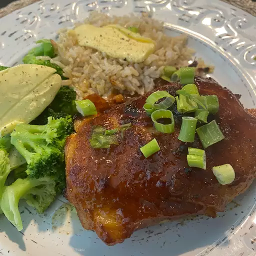

Home
Honey Baked Chicken II

Description
Baked chicken with a sweet and spicy glaze!
Honey Baked Chicken II
Ingredients
- 1 (3 pound) whole chicken, cut into pieces
- 1/2 cup butter, melted
- 1/2 cup honey
- 1/4 cup prepared mustard
- 1 tsp salt
- 1 tsp curry powder
Directions
- Preheat oven to 350 degrees F (175 degrees C).
- Place chicken pieces in a shallow baking pan, skin side up. Combine the melted butter or margarine, honey, mustard, salt and curry powdr and pour the micture over the chicken. Bake in the preheated oven for 1 1/4 hours (75 minutes), basting every 15 minutes with pan drippings, until the chicken is nicely browned and tender and the juices run clear.